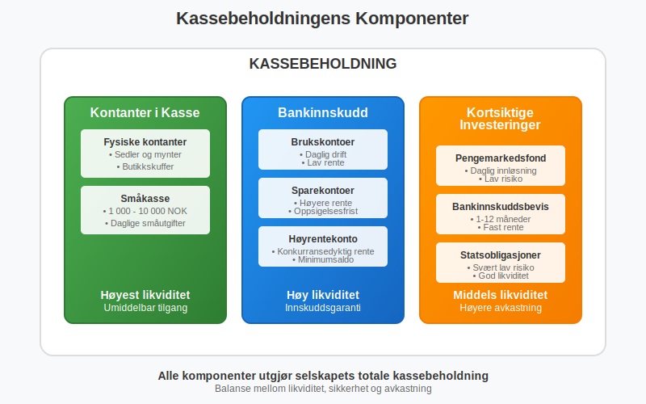
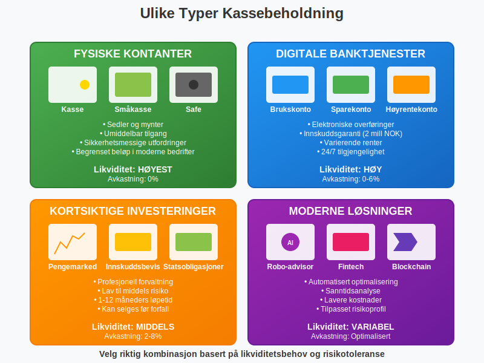
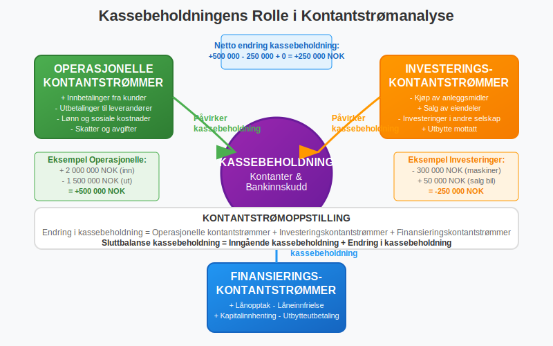
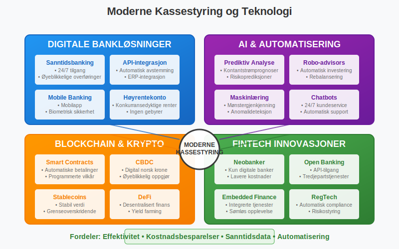
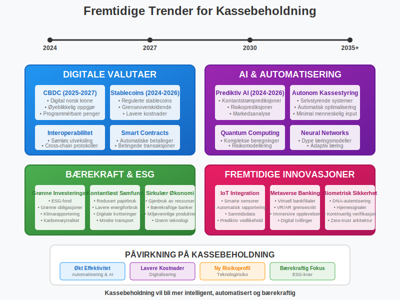

Kassebeholdning er selskapets beholdning av kontanter og andre likvide midler som kan brukes umiddelbart til å dekke løpende forpliktelser og operasjonelle behov. Som en av de mest likvide eiendelene i balansen, spiller kassebeholdning en kritisk rolle i selskapets likviditetsstyring og daglige drift.

Definisjon og Grunnleggende Forståelse
Kassebeholdning kan defineres på flere måter avhengig av kontekst og regnskapsstandard:
Regnskapsmessig Definisjon
Kassebeholdning = Kontanter + Bankinnskudd + Kortsiktige Investeringer
Dette omfatter alle midler som er umiddelbart tilgjengelige for bruk uten vesentlige restriksjoner.
Økonomisk Perspektiv
Fra et økonomisk perspektiv representerer kassebeholdning:
- Likvide midler som kan brukes øyeblikkelig
- Sikkerhetsbuffer mot uforutsette utgifter
- Operasjonell fleksibilitet for daglig drift
- Investeringsmuligheter som kan gripes raskt

Kassebeholdningens Komponenter
Kassebeholdning består av flere hovedkategorier som vises i balansens omløpsmidler:
1. Kontanter i Kasse
Fysiske kontanter
- Sedler og mynter i selskapets kasse
- Kontanter i butikkskuffer og vekslekasser
- Begrenset beløp i de fleste moderne bedrifter
- Sikkerhetsmessige utfordringer ved oppbevaring
Småkasse (Petty Cash)
- Mindre kontantbeløp for daglige småutgifter
- Typisk 1 000 - 10 000 NOK
- Krever intern kontroll og dokumentasjon
- Regelmessig avstemming og påfylling
2. Bankinnskudd
Brukskontoer
- Daglige driftskontoer for løpende transaksjoner
- Umiddelbar tilgang til midlene
- Lav eller ingen rente
- Høy likviditet og fleksibilitet
Sparekontoer
- Høyere rente enn brukskontoer
- Noe begrenset tilgang (oppsigelsesfrist)
- Sikker plassering av overskuddslikviditet
- Innskuddsgaranti opp til 2 millioner NOK
Høyrentekonto
- Konkurransedyktige renter
- Krav til minimumsaldo
- Begrenset antall transaksjoner per måned
- Balanse mellom avkastning og likviditet
3. Kortsiktige Investeringer
Pengemarkedsfond
- Profesjonell forvaltning av likvide midler
- Daglig innløsning
- Lav risiko og stabil verdi
- Bedre avkastning enn tradisjonelle sparekontoer
Bankinnskuddsbevis
- Fast rente over en bestemt periode
- Typisk 1-12 måneders løpetid
- Høyere rente enn vanlige innskudd
- Kan selges før forfall (med mulig tap)
Statsobligasjoner (kortsiktige)
- Svært lav risiko
- God likviditet i annenhåndsmarkedet
- Stabil verdiutvikling
- Lett å verdsette til markedsverdi

Kassebeholdning i Regnskapet
Plassering i Balansen
Kassebeholdning vises som omløpsmidler i balansen, typisk som den siste og mest likvide posten:
| Omløpsmidler | Beløp (NOK) | Likviditet |
|---|---|---|
| Varelager | 500 000 | Lav |
| Kundefordringer | 300 000 | Middels |
| Andre kortsiktige fordringer | 100 000 | Middels |
| Bankinnskudd | 250 000 | Høy |
| Kontanter | 25 000 | Høyest |
| Sum kassebeholdning | 275 000 | |
| Sum omløpsmidler | 1 175 000 |
Regnskapsføring av Kassebeholdning
Økning i kassebeholdning:
Debet: Bank/Kasse
Kredit: Inntektskonto/Kundefordringer
Reduksjon i kassebeholdning:
Debet: Kostnadskonto/Leverandørgjeld
Kredit: Bank/Kasse
Kassebeholdningens Rolle i Kontantstrømanalyse
Kassebeholdning er utgangspunktet for kontantstrømoppstillingen og påvirker alle tre hovedkategorier:
Operasjonelle Kontantstrømmer
- Innbetalinger fra kunder øker kassebeholdningen - spesielt ved bruk av kontantfaktura som sikrer umiddelbar betaling
- Utbetalinger til leverandører reduserer kassebeholdningen
- Lønn og sosiale kostnader påvirker kassebeholdningen direkte
- Skatter og avgifter krever tilstrekkelig kassebeholdning
Investeringskontantstrømmer
- Kjøp av anleggsmidler reduserer kassebeholdningen betydelig
- Salg av eiendeler øker kassebeholdningen
- Investeringer i andre selskaper påvirker likviditeten
- Utbytte mottatt øker kassebeholdningen
Finansieringskontantstrømmer
- Lånopptak øker kassebeholdningen umiddelbart
- Låneinnfrielse reduserer kassebeholdningen
- Utbytteutbetalinger krever tilstrekkelig kassebeholdning
- Kapitalinnhenting øker kassebeholdningen

Optimal Kassebeholdning
Faktorer som Påvirker Optimal Kassebeholdning
Bransje og Sesongvariasjoner
- Detaljhandel krever høyere kassebeholdning under høysesonger
- Byggebransjen har store prosjektutbetalinger
- Tjenestebedrifter har mer forutsigbare kontantstrømmer
- Produksjonsbedrifter må finansiere råvareinnkjøp
Selskapets Størrelse
- Store selskaper har bedre tilgang til kreditt
- Små bedrifter er mer avhengige av kassebeholdning
- Børsnoterte selskaper har flere finansieringsalternativer
- Familieselskaper prioriterer ofte høyere kassebeholdning
Beregning av Optimal Kassebeholdning
Baumol-modellen for optimal kassebeholdning:
Optimal kassebeholdning = √(2 × Årlige kontantutbetalinger × Transaksjonskostnad / Rentesats)
Eksempel:
- Årlige kontantutbetalinger: 12 000 000 NOK
- Transaksjonskostnad per handel: 500 NOK
- Rentesats på investeringer: 4%
Optimal kassebeholdning = √(2 × 12 000 000 × 500 / 0,04) = √300 000 000 = 547 723 NOK
Miller-Orr Modellen
For mer variable kontantstrømmer brukes Miller-Orr modellen:
| Parameter | Verdi | Forklaring |
|---|---|---|
| Nedre grense | 100 000 NOK | Minimum kassebeholdning |
| Øvre grense | 400 000 NOK | Maksimum før investering |
| Målnivå | 200 000 NOK | Ønsket kassebeholdning |
| Standardavvik | 50 000 NOK | Variasjon i daglige kontantstrømmer |
Kassestyring og Likviditetsstyring
Daglig Kassestyring
Kontantprognose
- Kortsiktige prognoser (1-4 uker) for daglig drift
- Mellomlangsiktige prognoser (1-12 måneder) for planlegging
- Langsiktige prognoser (1-3 år) for strategiske beslutninger
- Rullende prognoser som oppdateres kontinuerlig
Likviditetsstyring
- Daglig avstemming av alle bankkontoer
- Overvåking av inn- og utbetalinger
- Optimalisering av kontosaldoer
- Automatisering av rutinetransaksjoner
Kassekreditt og Finansiering
Kassekreditt som Sikkerhetsnett
- Fleksibel finansiering for kortsiktige behov
- Rask tilgang til ekstra likviditet
- Variabel rente basert på markedsrenter
- Sikkerhetsstillelse i form av pant eller kausjon
| Kassekreditttype | Rente | Gebyr | Sikkerhet |
|---|---|---|---|
| Usikret kassekreditt | 8-12% | 0,5-1% | Ingen |
| Sikret kassekreditt | 6-9% | 0,25-0,5% | Pant i eiendeler |
| Kontokortkreditt | 15-25% | Ingen | Begrenset ramme |
Risikostyring av Kassebeholdning
Likviditetsrisiko
Identifisering av Risiko
- Sesongvariasjoner i kontantstrømmer
- Kundekonsentrasjonsrisiko ved få store kunder
- Leverandørkonsentrasjonsrisiko ved kritiske leverandører
- Markedsrisiko ved økonomiske nedgangstider
Risikohåndtering
- Diversifisering av inntektskilder
- Fleksible betalingsvilkår med kunder og leverandører
- Kredittforsikring på store kundefordringer
- Likviditetsbuffere for uforutsette hendelser
Renterisiko
Påvirkning på Kassebeholdning
- Stigende renter øker avkastningen på bankinnskudd
- Fallende renter reduserer inntektene fra kassebeholdning
- Rentevolatilitet påvirker verdien av kortsiktige investeringer
- Inflasjon reduserer kjøpekraften til kassebeholdning
Sikringsstrategier
- Rentetrapper for å spre renterisiko over tid
- Flytende vs. fast rente på bankinnskudd
- Kortsiktige investeringer med variabel avkastning
- Naturlig sikring gjennom matchende aktiva og passiva

Kassebeholdning og Skattemessige Forhold
Skattlegging av Renteinntekter
Renteinntekter fra Bankinnskudd
- Skattepliktige som finansinntekter
- Beskattes med ordinær skattesats (22% for selskaper)
- Kildeskatt kan trekkes på enkelte typer innskudd
- Rapporteringsplikt til skattemyndighetene
Gevinst/Tap på Kortsiktige Investeringer
- Realiserte gevinster er skattepliktige
- Urealiserte gevinster beskattes ikke før realisering
- Tap kan fradras mot andre kapitalinntekter
- Valutagevinster/-tap på utenlandske innskudd
Optimal Skatteplanlegging
| Investeringstype | Skattebehandling | Effektiv avkastning |
|---|---|---|
| Bankinnskudd (4%) | Skattepliktig | 3,12% (etter 22% skatt) |
| Pengemarkedsfond (3,5%) | Skattepliktig | 2,73% (etter 22% skatt) |
| Aksjesparekonto | Utsatt skatt | Variabel |
Kassebeholdning i Ulike Selskapsformer
Aksjeselskap (AS)
- Begrenset ansvar beskytter eiernes private midler
- Fleksible finansieringsalternativer gjennom aksjekapital
- Profesjonell kassestyring med styrets ansvar
- Revisjonsplikt sikrer kontroll med kassebeholdning
Enkeltpersonforetak
- Enkel kassestyring med personlig ansvar
- Begrenset tilgang til ekstern finansiering
- Høyere kassebeholdning som sikkerhetsbuffer
- Personlig økonomi blandes med bedriftens kassebeholdning
Ansvarlig Selskap (ANS)
- Delt ansvar for kassestyring mellom deltakerne
- Kompleks beslutningsprosess for større investeringer
- Solidarisk ansvar for kassebeholdningens forvaltning
- Avtaleregulert fordeling av kassebeholdning
Teknologi og Moderne Kassestyring
Digitale Betalingsløsninger
Elektroniske Betalinger
- Bankoverføringer reduserer behovet for kontanter
- Kortbetalinger gir raskere kontantstrøm
- Mobile betalingsløsninger øker betalingsfleksibilitet
- Automatiserte betalinger reduserer administrative kostnader
Kassestyringssystemer
- Sanntidsovervåking av alle bankkontoer
- Automatisk avstemming av transaksjoner
- Prognoseverktøy for kontantstrømplanlegging
- Integrasjon med regnskapssystem
Fintech og Kassebeholdning
Digitale Bankløsninger
- Høyere renter på digitale sparekontoer
- Lavere gebyrer for transaksjoner
- Bedre brukeropplevelse og tilgjengelighet
- Innovative spareprodukter med fleksible vilkår
Automatisert Investering
- Robo-advisors for overskuddslikviditet
- Automatisk rebalansering av investeringsportefølje
- Lavere forvaltningskostnader enn tradisjonelle løsninger
- Tilpasset risikoprofil basert på selskapets behov

Nøkkeltall og Analyse av Kassebeholdning
Likviditetsanalyse
Likviditetsgrad 1 (Løpende likviditet) Likviditetsgrad 1 = (Omløpsmidler) / (Kortsiktig gjeld)
Likviditetsgrad 2 (Hurtig likviditet) Likviditetsgrad 2 = (Omløpsmidler - Varelager) / (Kortsiktig gjeld)
Kassebeholdningsgrad Kassebeholdningsgrad = (Kassebeholdning) / (Kortsiktig gjeld)
Eksempel på Likviditetsanalyse
| Nøkkeltall | Beregning | Resultat | Vurdering |
|---|---|---|---|
| Likviditetsgrad 1 | 1 175 000 / 500 000 | 2,35 | God likviditet |
| Likviditetsgrad 2 | 675 000 / 500 000 | 1,35 | Akseptabel |
| Kassebeholdningsgrad | 275 000 / 500 000 | 0,55 | Meget god |
Effektivitetsanalyse
Kassebeholdningens Omløpshastighet Omløpshastighet = (Årlige kontantutbetalinger) / (Gjennomsnittlig kassebeholdning)
Dager med Kassebeholdning Dager = 365 / Omløpshastighet
Eksempel:
- Årlige kontantutbetalinger: 6 000 000 NOK
- Gjennomsnittlig kassebeholdning: 300 000 NOK
- Omløpshastighet: 6 000 000 / 300 000 = 20 ganger
- Dager med kassebeholdning: 365 / 20 = 18,3 dager
Internkontroll og Kassebeholdning
Kontrollrutiner for Kassebeholdning
Daglige Kontroller
- Avstemming av alle bankkontoer
- Kontroll av kontantbeholdning i kasse
- Registrering av alle inn- og utbetalinger
- Oppfølging av uvanlige transaksjoner
Månedlige Kontroller
- Bankavstemming mot regnskapet
- Analyse av kontantstrømmer
- Vurdering av kassebeholdningens størrelse
- Rapportering til ledelsen
Årlige Kontroller
- Revisjon av kassestyringsrutiner
- Evaluering av intern kontroll
- Oppdatering av retningslinjer
- Kompetanseutvikling for ansatte
Segregering av Oppgaver
| Funksjon | Ansvarlig | Kontroll |
|---|---|---|
| Godkjenning av utbetalinger | Økonomisjef | Daglig leder |
| Utføring av betalinger | Regnskapsfører | Økonomisjef |
| Registrering i regnskap | Bokholder | Regnskapsfører |
| Avstemming av banker | Controller | Økonomisjef |
Kassebeholdning og Bærekraft
Miljømessige Hensyn
Redusert Kontantbruk
- Mindre papirproduksjon for sedler og mynter
- Redusert transport av kontanter
- Lavere energiforbruk i bankfilialer
- Digitale kvitteringer reduserer papirforbruk
Bærekraftige Investeringer
- Grønne obligasjoner for overskuddslikviditet
- ESG-fond med miljøfokus
- Bærekraftige banker som prioriterer miljøhensyn
- Klimarapportering av investeringer
Sosiale Hensyn
Finansiell Inkludering
- Tilgang til banktjenester for alle ansatte
- Opplæring i personlig økonomi
- Fleksible betalingsløsninger for kunder
- Støtte til lokale finansinstitusjoner
Fremtidige Trender for Kassebeholdning
Digitale Valutaer
Sentralbankens Digitale Valuta (CBDC)
- Norges Bank utvikler digital krone
- Øyeblikkelige oppgjør mellom bedrifter
- Reduserte transaksjonskostnader
- Ny infrastruktur for betalinger
Kryptovalutaer
- Bitcoin og andre kryptovalutaer som verdilager
- Stablecoins knyttet til tradisjonelle valutaer
- Regulatorisk usikkerhet rundt skattebehandling
- Volatilitet som utfordring for kassestyring
Kunstig Intelligens og Automatisering
AI-drevet Kassestyring
- Prediktive modeller for kontantstrømmer
- Automatisk optimalisering av kassebeholdning
- Sanntidsanalyse av likviditetsrisiko
- Personaliserte anbefalinger for investeringer
Blockchain-teknologi
- Smart contracts for automatiske betalinger
- Transparent og sporbar transaksjonshistorikk
- Reduserte mellommenn i betalingskjeden
- Økt sikkerhet mot svindel og feil

Praktiske Tips for Kassestyring
For Små Bedrifter
Grunnleggende Kassestyring
- Opprett separate forretnings- og private kontoer
- Bruk regnskapssystem for å spore kontantstrømmer
- Sett opp automatiske betalinger for faste kostnader
- Oppretthold en kassebuffer på 3-6 måneders driftskostnader
Kostnadseffektive Løsninger
- Sammenlign bankgebyrer og velg kostnadseffektive løsninger
- Bruk digitale betalingsløsninger for å redusere kontanthåndtering
- Investér overskuddslikviditet i høyrentekonto eller pengemarkedsfond
- Automatiser så mange rutiner som mulig
For Mellomstore Bedrifter
Avansert Kassestyring
- Implementer kasseprognoser med rullende 13-ukers horisont
- Etabler kredittlinjer som sikkerhetsnett
- Diversifiser kassebeholdningen på flere banker
- Vurder kortsiktige investeringsalternativer
Organisatoriske Tiltak
- Definer klare roller og ansvar for kassestyring
- Etabler godkjenningsrutiner for større utbetalinger
- Implementer månedlig rapportering til ledelsen
- Gjennomfør årlige evalueringer av kassestyringsrutiner
For Store Bedrifter
Sofistikert Kassestyring
- Sentralisert kassestyring for hele konsernet
- Avanserte prognoseverktøy med scenarioanalyser
- Profesjonell treasury-funksjon
- Integrerte ERP-systemer for sanntidsrapportering
Strategiske Vurderinger
- Kapitalallokering mellom ulike forretningsområder
- Valutasikring for internasjonale operasjoner
- Optimalisering av konsernets samlede kassebeholdning
- Strategiske investeringer av overskuddslikviditet
Konklusjon
Kassebeholdning er en kritisk komponent i enhver bedrifts finansielle struktur og operasjonelle suksess. Effektiv kassestyring krever en balanse mellom å opprettholde tilstrekkelig likviditet for daglig drift og å optimalisere avkastningen på overskuddslikviditet.
Nøkkelprinsipper for suksessfull kassestyring:
- Planlegging: Utvikle nøyaktige kontantstrømprognoser
- Kontroll: Implementer robuste internkontrollrutiner
- Optimalisering: Maksimer avkastningen på kassebeholdning
- Risikostyring: Identifiser og håndter likviditetsrisiko
- Teknologi: Utnytt moderne verktøy for effektiv kassestyring
Ved å følge disse prinsippene og tilpasse kassestyringsstrategien til selskapets spesifikke behov og risikoprofil, kan bedrifter sikre både finansiell stabilitet og optimal kapitalutnyttelse. Kassebeholdning er ikke bare en nødvendighet for daglig drift, men også et strategisk verktøy for å gripe forretningsmuligheter og navigere gjennom økonomiske utfordringer.
I en stadig mer digitalisert verden vil kassestyring fortsette å utvikle seg, med nye teknologier og finansielle instrumenter som gir bedrifter enda flere muligheter for å optimalisere sin kassebeholdning og likviditetsstyring.